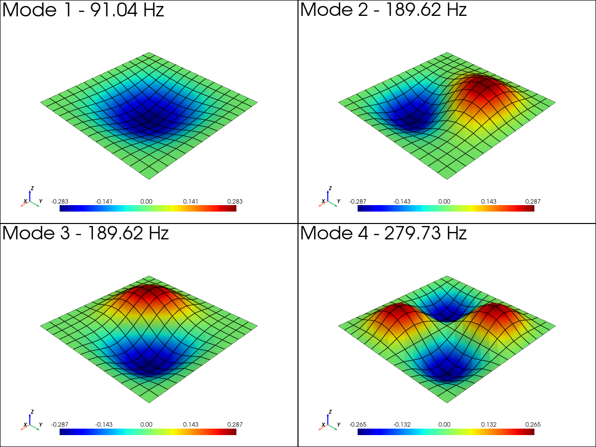

Note
Go to the end to download the full example code.
Free vibration of a clamped square plate
This example computes the natural frequencies and mode shapes of a square plate clamped along its entire boundary. A modal analysis solves the generalized eigenvalue problem
where \(\mathbf{K}\) and \(\mathbf{M}\) are the stiffness and mass matrices, \(\omega\) is an angular frequency, and \(\boldsymbol{\phi}\) is a mode shape. Because no external load is needed, this analysis is also called a free-vibration analysis.
import numpy as np
import pyvista as pv
import fedoo as fd
Geometry and mesh
The one-metre square mid-surface is discretized with quadrilateral shell elements. Its thickness is small compared with its in-plane dimensions.
fd.ModelingSpace("3D")
length = 1.0
thickness = 0.01
mesh = fd.mesh.rectangle_mesh(
nx=15,
ny=15,
x_min=0.0,
x_max=length,
y_min=0.0,
y_max=length,
elm_type="quad4",
ndim=3,
)
Material, shell section, and assembly
ShellHomogeneous integrates the elastic material through the specified
thickness. The material density supplies the translational and rotary
inertia used to assemble the shell mass matrix.
steel = fd.constitutivelaw.ElasticIsotrop(210e9, 0.3)
steel.set_density(7800.0)
shell = fd.constitutivelaw.ShellHomogeneous(steel, thickness)
weakform = fd.weakform.PlateEquilibrium(shell)
assembly = fd.Assembly.create(weakform, mesh)
Modal problem
A clamped shell boundary has zero translations and zero rotations. The four
edge node sets are combined so that this condition is applied around the
complete perimeter. sigma=0 asks the sparse eigensolver for the four
modes closest to zero frequency.
Registering an output writes one frame per mode to the fdh5 file. Each
frame also contains the mode number, eigenvalue, angular frequency, and
frequency as scalar metadata.
boundary = np.unique(
np.concatenate(
[mesh.node_sets[name] for name in ("left", "right", "bottom", "top")]
)
)
modal = fd.problem.Modal(assembly)
modal.bc.add("Dirichlet", boundary, ["Disp", "Rot"], 0.0)
results = modal.add_output(
"clamped_plate_modes.fdh5",
assembly,
["Disp", "Rot", "Strain", "Stress"],
)
modal.solve(n_modes=4, sigma=0.0)
print("Natural frequencies [Hz]:")
for mode, frequency in enumerate(modal.frequencies, start=1):
print(f" mode {mode}: {frequency:.6g}")
Natural frequencies [Hz]:
mode 1: 91.041
mode 2: 189.619
mode 3: 189.619
mode 4: 279.734
Plot the first four mode shapes
Eigenvectors have no physical amplitude. Each mode is therefore scaled so
that its maximum transverse displacement is 15% of the plate width. The
four saved frames are drawn in a shared 2-by-2 PyVista plotter through the
standard fedoo.DataSet plotting interface. multiplot=True gives
every subplot its own mesh actor and scalar bar.
plotter = pv.Plotter(shape=(2, 2), window_size=(1200, 900))
for mode_index, frequency in enumerate(modal.frequencies):
results.load(mode_index)
transverse_displacement = results["Disp"][2]
amplitude = np.max(np.abs(transverse_displacement))
display_scale = 0.15 * length / amplitude
plotter.subplot(*divmod(mode_index, 2))
results.plot(
"Disp",
component="Z",
iteration=mode_index,
scale=display_scale,
clim=[-amplitude, amplitude],
plotter=plotter,
show=False,
show_edges=True,
multiplot=True,
title=f"Mode {mode_index + 1} - {frequency:.2f} Hz",
)
plotter.link_views()
plotter.view_isometric()
plotter.show()

Total running time of the script: (0 minutes 0.367 seconds)